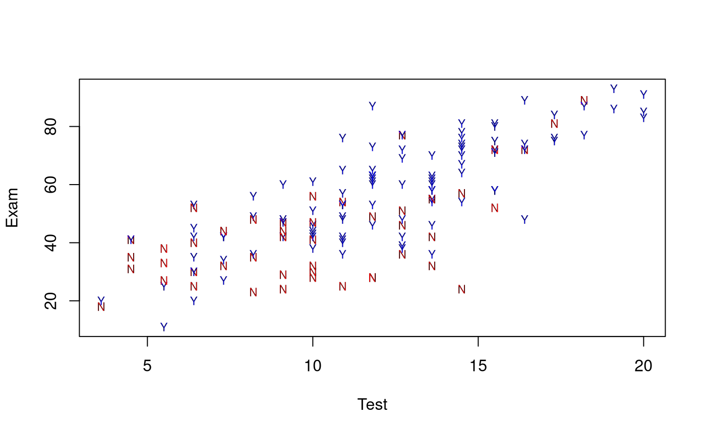
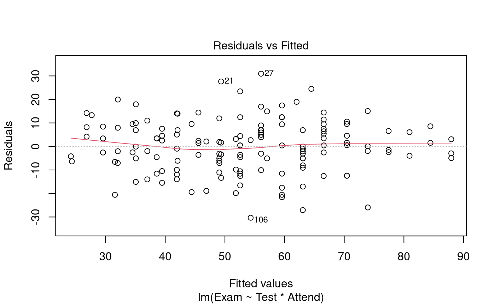
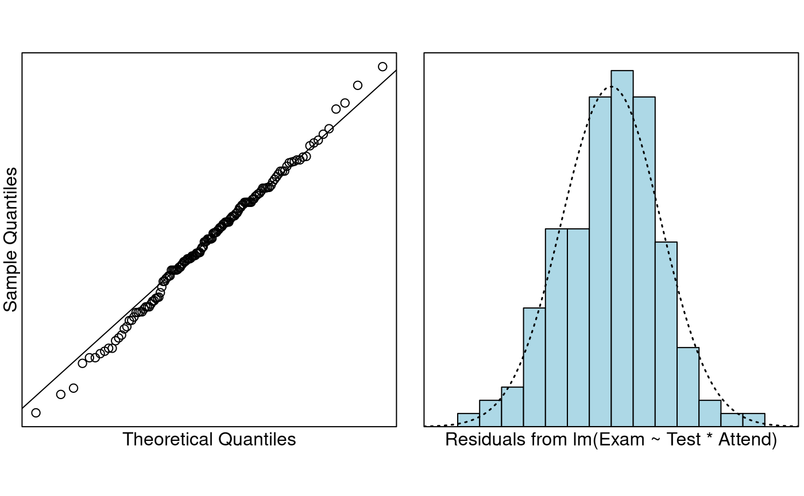
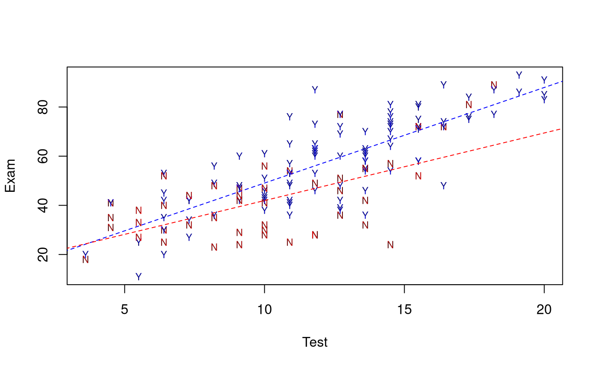

Problem
We’ve previously used test marks and attendance separately in order to explain variability in exam marks. The objective here is to use them together.
Question of Interest
To quantify students’ exam marks relationship with attendance and test marks. Also, does any relationship between exam marks and test marks depend on whether students attended lectures.
Read in and Inspect the Data
Stats20x.df = read.table("STATS20x.txt", header = TRUE)
plot(Exam ~ Test,
data = Stats20x.df, pch = substr(Attend, 1, 1), cex = 0.7,
col = ifelse(Attend == "Yes", "blue", "red")
)
A scatter plot of test score versus exam suggested that the positive relationship between test and exam was reasonably linear within each attendance group (“Yes” or “No”), but that the slope could be different in the two groups.
Model Building and Check Assumptions
examTestAttend.fit = lm(Exam ~ Test * Attend, data = Stats20x.df)
plot(examTestAttend.fit, which = 1)
normcheck(examTestAttend.fit)
cooks20x(examTestAttend.fit)
summary(examTestAttend.fit)##
## Call:
## lm(formula = Exam ~ Test * Attend, data = Stats20x.df)
##
## Residuals:
## Min 1Q Median 3Q Max
## -30.3155 -6.5139 0.4383 7.3166 30.9383
##
## Coefficients:
## Estimate Std. Error t value Pr(>|t|)
## (Intercept) 14.4467 4.9443 2.922 0.00405 **
## Test 2.7496 0.4603 5.973 1.78e-08 ***
## AttendYes -4.2582 6.3723 -0.668 0.50506
## Test:AttendYes 1.1380 0.5577 2.040 0.04316 *
## ---
## Signif. codes: 0 '***' 0.001 '**' 0.01 '*' 0.05 '.' 0.1 ' ' 1
##
## Residual standard error: 11.41 on 142 degrees of freedom
## Multiple R-squared: 0.6347, Adjusted R-squared: 0.627
## F-statistic: 82.25 on 3 and 142 DF, p-value: < 2.2e-16
confint(examTestAttend.fit)## 2.5 % 97.5 %
## (Intercept) 4.67287511 24.220625
## Test 1.83956971 3.659567
## AttendYes -16.85506294 8.338572
## Test:AttendYes 0.03547053 2.240510Visualise the Final Model
predAttend.df = data.frame(Test = 1:21, Attend = "Yes")
predSlackers.df = data.frame(Test = 1:21, Attend = "No")
plot(Exam ~ Test,
data = Stats20x.df, pch = substr(Attend, 1, 1), cex = 0.7,
col = ifelse(Attend == "Yes", "blue", "red")
)
lines(1:21, predict(examTestAttend.fit, predAttend.df), col = "blue", lty = 2)
lines(1:21, predict(examTestAttend.fit, predSlackers.df), col = "red", lty = 2)
Method and Assumption Checks
As we have two explanatory variables, one numeric and one factor, we have fitted a linear model that used different intercept and slopes for each attendance group (i.e., interaction model). We could not drop the interaction term (P-value = 0.043).
All model assumptions were satisfied.
Our final model is where if student is a regular attender, otherwise 0, and .
Our model explained a modest 63% of the variability in students’ exam marks.
Executive Summary
We wanted to quantify students’ exam marks relationship with attendance and test marks.
There was a clear linear relationship between test and exam scores, but this relationship differed between students who attended and who did not attend lectures.
We estimate that each additional test mark (out of 20) obtained by a non-attending student would increase their expected exam mark by between 1.8 to 3.7.
For regular attenders, the increase is an additional 0.04 to 2.24 expected exam marks per test mark.